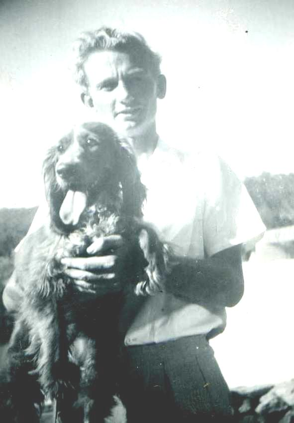
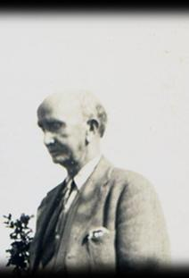

THE YEARS BETWEEN — 1945–1955
Foreword: When I first thought of writing about my teenage years I worked with the title ‘The Difficult Years’. I have always thought of those years as ‘difficult’ and in many ways they were. But as I proceeded I realised that during my teen years I had many good times and many great friends to see me through. In the ten year span from the death of my father to the death of my mother my life had many uncertainties. Underlying this account is the memory of my mother and the at times difficult relationship I had with her, something I never understood and could never come to terms with. I still can’t. A sub title for this account might well be…
The story of a teenage boy and his mother.
1945
Junior was ten years and six months old when on the nineteenth of January 1945 his father was killed riding his department motor cycle along the winding bush track known as the Mungalup Road returning to Collie from the Mungalup forest lookout tower. In attempting to pass a utility truck either parked or travelling slowly, his motor cycle sidecar caught the side of the truck and he was thrown from the motor cycle onto the track verge. Apparently unhurt he picked himself up and spoke to the truck driver, Mr Clem Spencer, who had been delivering items to some of the small properties fronting the track. The truck driver, quite well known in Collie, later said that Mr Skitch had asked him to help find his wallet that had dropped from his pocket in the fall. Together they searched the skid marks then transferred the contents of the motor cycle’s wooden box sidecar to the back of the truck. The damaged motor cycle and sidecar were left at the track side. Mr Spencer said that at that point Mr Skitch confessed to feeling faint and suddenly collapsed on the track. Junior does not know whether the truck driver brought his father back to Collie, presumably to the Collie hospital, however, he was dead on arrival and he understood that he had actually passed away at the scene of the accident. Junior learned later that the fall had ruptured his spleen and liver. The autopsy said he had an enlarged spleen. Junior’s father was thirty-nine years old. The Mungalup track was well known to Junior. He and Geoff Fogarty had often ridden their bikes to the fire look-out tower. The tower was not huge, perhaps thirty feet in height and constructed of timber with a small hut on top. It was manned by a very friendly lady during the later war years. She would invite them to climb the tower and show them her maps on top of the table at the tower top and her compass with which she took bearings to a suspected fire. There was another direction device fixed the centre of the table. Junior found all this quite fascinating. Junior was also very familiar with his father’s motor bike having travelled in the wooden box sidecar with his father on some of his bush runs, sometimes with Mum as well.1

Leaving Collie
At ten and a half years I left Collie behind with a heavy heart. I could not come to terms with my father’s death. I could not come to terms with all the things I valued being left behind. Leaving behind my cobbers and my beautiful Kelpie dog Pix was a further heartbreak. In retrospect I believe it would have been easier had Mum and I been able to remain in our home for a week or two; had my father’s funeral been at the old Collie cemetery around which I had wandered looking at graves so many times. But no — it seemed to be a matter of urgency that we should go to Perth and did so two or three days later in the company of Aunty Jessie and Uncle Bert Bell who had come to Collie to be with Mum. There was an inquest held in the Collie Court House a couple of days later which rightly cleared the truck driver of any blame and my father’s body was legally released to be transported to Perth under the supervision of a Collie Undertaker. I became aware some years later that there was considerable cost in this. So we boarded the train for Perth, Mum, Aunty Jessie, Uncle Bert and me, to be met at the Perth suburb Carlisle after an arduous day, a journey I had done many times before under happier circumstances, by Grandad and Uncle Lennie. Throughout the day long trip, from Collie to Brunswick Junction and then on the Perth ‘express’, Uncle Bert tried to keep me amused with little stories and jokes — one I remember concerned the Tower of London, the ‘bloody tower’. It seemed funny at the time. Somewhere along the way I asked if Dad was travelling in the guard’s van and that seemed to distress Mum and Aunty Jessie responded with simply ‘no Junior’ in a voice that implied I should not have asked. Somehow in my grandparents’ little house in Bishopgate Street we were put up, Mum and me in Grandma’s double bed, Grandma in the second bed in Grandad’s room and Uncle Lennie out the back in an old bed in the wash house. Uncle Bert and Aunty Jessie returned to their home in Ventnor Street, Subiaco, perhaps they remained on the train to Perth Central. I had one or two nights up the road with the Dodds who also were living in Bishopgate Street, bunking in with cousins Ken and Glen. It was my second stay with grandparents in as many weeks. Mum and I had had our annual Christmas visit recently, returning to Collie only two weeks previous.

My father’s funeral
It was thought better that I not attend my father’s funeral. I am not sure why and in retrospect I cannot recall whether I wanted to or not. I simply accepted that I was not going and I recall playing with the Dodd children in the Dodd’s backyard on the morning of the funeral. At one point I pulled out of playing and buried my head in my arms against a chair. I heard one of the kids ask ‘what’s wrong with him?’ My cousin Ken replied not unkindly ‘his dad is dead; he’s being buried this morning’ That quietened the play for a while but it soon resumed. As far as I am aware all of Mum’s Perth based relatives attended, brothers, sisters, Grandad but not Grandma. Dad had a Skitch cousin in Perth, Mason Skitch and he attended. There would not have been many. As far as I know none of his work colleagues and mates from Collie were able to attend although Mum told me that Mr Kessel, the Conservator of Forests (head man in Forestry) had sent a representative from his office, perhaps one known to Dad since he had spent some years at the Ludlow Forestry School in the south west. Dad had little time for Mum’s family, with one or two exceptions. He was not well known to them and had had little contact over the years. He was well known and liked in Collie, was captain of the Collie Tennis Club, had served in the Militia before the war and the VDF during the war achieving the rank of Staff Sergeant in the Forestry unit; had an easy relationship with his work colleagues and enjoyed his few mates at the Colliefields Hotel for an occasional beer. Walking with Dad down Throssell Street he would be greeted by many. On the odd occasion he would detour across the road and place a small bet with the SP, 2/6 pence each way. Had his funeral service been at the Methodist Church and burial at the Collie Cemetery there would have been many attending, friends and colleagues who meant something to him and no doubt Aunty Grace and Uncle Bert Woodward from Collie-Cardiff would have been there also. My father was a very decent man. I have often wondered why any of this did not occur to Mum. Perhaps it had been suggested since I recall her saying that she would not have him buried in Collie’s graveyard.
ARRINO
The Coverleys
My Aunty Thora and Uncle Don Coverley had bought the general store at Arrino about twelve months before having sold their South Perth shop on the Canning Highway. In the week following the death of my father Aunty Thora had suggested that Mum and I stay with them at Arrino until everything was settled in Collie and our immediate future determined. I could attend school at Arrino with my cousin Robin and so it was decided. I can’t recall my own feelings at the prospect but I knew and liked my Aunty Thora very much having stayed with the Coverleys in their South Perth shop for some weeks when Dad was undergoing military training at Swanborne in 1941. A week or so after the funeral Mum and I boarded a train for Arrino 100 kilometres south of Geraldton on the ‘Midland Line’. The Midland line was run by a private company, from Midland Junction, a north eastern suburb of Perth, in those days on the outskirts of Perth, to Geraldton. It was then by far the longest private railway track in Australia with its own rolling stock and not a very good advertisement for privately run rail. The carriages were shabby and dirty, all the same class and by comparison the State Government rolling stock was luxurious — certainly in first class. We took the suburban trains to Perth (central) then to Midland Junction to board the Midland train to Geraldton. We arrived at Arrino in the early evening. There was only a low level gravelly platform at Arrino, however, Uncle Don was there to help us off the train. The Coverleys’ store was directly opposite the railway stop on the western side of the track and across the highway, then the main Perth–Geraldton road link. There were a few houses on either side of the store, a straggly back street with a few more houses and that was about all there was to Arrino. The move to Arrino was a good one for me and I found that I rapidly lost my feeling of dislocation and bewilderment at the loss of my father. I continued to fantasize that Dad was somewhere on a secret mission and would return when the war was over but gradually this faded and probably by the time I left Arrino to return to Perth I had come to terms with and accepted his death.
The home and store
The Coverleys had a substantial brick home that adjoined the large general store. A driveway down the other free side of the house led to the back yard that contained the lavatory and a large raised platform built from heavy timber on which were stacked 44 gallon drums of fuel, petrol and diesel. The platform had truck access from the rear. There were large peppermint trees in the back yard and the lavatory, not too far from the back door, was an earth closet with a ‘sanipan’ lid such than when the lid was lowered it squirted phenyl or similar onto the excrement at the bottom of the deep pit. The Coverleys’ general store sold a huge range of items, groceries, stationary, small items of apparel, particularly hard wear clothing, items for farm use, vegetables that arrived by train a couple of times a week, milk and dairy products and occasionally, lollies, mostly peppermint rock and rarely chocolate. But of course it was wartime and many commodities were in short supply and most foodstuffs were subject to rationing requiring coupons from the purchaser’s ration book. This would have presented no difficulty to Aunty Thora and Uncle Don since they had previously owned and run a corner store in South Perth. But of course Arrino being a farming community there was a certain amount of local produce sold from the farm door, home-made butter and from time to time, meat. In front of the store, just off the highway there were two hand pump bowsers providing petrol to passing motorists (there weren’t many). The petrol brand was ‘Pool’ which was a wartime concept presumably resulting from the pooling of petrol from the producing companies. Much of it came from the Commonwealth Oil Refineries, marketed as ‘COR’, a well known brand pre-war. Aunty Thora ran a post office and a post office savings bank from within the store. At that time a post office savings bank was where most people saved their money and made transactions by postal money order or bank order. Also one could buy ‘War Savings Certificates’ at about that time renamed ‘Victory Certificates’ for specified amounts, five shillings, ten shillings, one pound and probably higher. This was money lent to the government for the ‘war effort’ to be cashed in after the war with a small amount of interest. It all seemed to be a busy life for Aunty Thora and Uncle Don. They seemed to get on well with everyone. To me Uncle Don was the archetypical strong silent man, tall, slightly balding, seemed to always be bustling from job to job, never a great deal to say certainly not to us children. He was a little deaf, no doubt a legacy of his timber milling days at Jarrahdale. He had a way with the local farmers coming into Arrino for farm supplies and fuel. They both liked and respected him. He played in the local (Arrino I presume) cricket team and had the reputation of being a big hitter. He had a particular passion for cats. There were always one or two cats about the home and Uncle Don got particular pleasure from them beyond their undoubted ability to catch mice. One evening it was noticed that Fiddles the cat had something bailed up in the front garden. Investigation showed it to be a brown snake. Uncle Don had a heavy wire switch at the back door that was his snake killer. The snake was quickly dispatched and Fiddles awarded a cardboard bravery medal by Robin and me that he refused to wear. At that time the general feeling was the only good snake was a dead one. Some months before Mum and my arrival Uncle Don in backing his utility back up the side driveway failed to see Robin, knocking her over breaking her leg. Robin had her leg in a plaster cast for quite some weeks and it had not long been removed at the time of our arrival. The removed cast stood in a corner of the front veranda for some time as some sort of trophy to the event.
The Coverleys’ home life
The Coverley home, in fact the whole of Arrino had no electric power. In the Coverley home lighting at night was provided by a number of kerosene lamps, one in particular that occupied central place on the dining room table was an ‘Aladdin’ mantle lamp. This was the first I had ever seen. The circular wick produced a very clean circular flame that heated to white hot a very delicate cone shaped mantle over the flame. The mantle could be easily damaged so the lamp had to be treated with a good deal of care. Hurricane lamps were used generally around the house both inside and outside. I think there was a refrigerator within the house and if so it would have been a kerosene flame refrigerator. Then the store itself would also have had a large storage refrigerator or cold room and I can only surmise that it would have been electric generator driven. Aunty Thora had full time home help — I think her name was Nola, a very pleasant late teenage girl who generally cleaned the house, did the washing and ironing for all although during the time Mum was at Arrino she helped with the chores. How was the ironing done? — with a methylated spirit burning iron. Those who did the ironing often complained that men’s shirts were a challenge to iron. I once put that proposition to Nola and she said ‘no — she most hated ironing pillowslips’. Odd, I thought — pillowslips would be the easiest. Perhaps Nola’s dislike was because there were so many of them.
World War Two
1945 was to be the final year of World War Two although in January there seemed to be no guarantee of that. The daily news bulletins listened to on the spluttery console wireless and supplemented by the West Australian arriving on the train one or two days late were optimistic on the European fronts, both Allied in the west and Russian in the east, The German armies were being inexorably rolled back and the war was at last well and truly on German soil. However, the war against Japan was less clear. General Macarthur was pushing the Japanese Imperial Forces from island to island northwards. The Coral Sea naval battle was trumped to be the turning point of the war but in January 1945 there still seemed to be a long way to go. The ‘kamikaze’ attacks had started against the warships and aircraft carriers of the US Navy. Young Japanese pilots on suicide missions flying aircraft packed full of explosives crashed themselves into the deck and vulnerable sides of ships causing huge naval losses, both ships and their crews. There seemed to be no measure the Japanese would not take in their prosecution of the war. The war news fascinated me and I would dive for the paper as soon as Uncle Don had finished with it. The Australian forces were still engaged on the northern coast of New Guinea, but somehow there was little said about the New Guinea campaign in the papers or on the news. I would wonder what Dad would have made of it all — perhaps he was there!
The Arrino school
Within a few days of arrival I fronted up to the Arrino school some two or three hundred metres along the main road to Perth. It was a ‘one teacher’ school. The teacher was an elderly gentleman — Mr Thompson. He was assisted by his wife, Mrs Thompson who may have been a teacher in her own right, however, Mr Thompson made it clear to all that Mrs Thompson was not paid and she taught from the goodness of her heart. The grades ranged from about first grade to about sixth grade and I can recall only one at that top level, a girl who was mainly given work to do at home, a property some miles out of Arrino. I was fifth grade with two or three others and Robin was about third grade. The school ran on the principle that the older pupils helped the younger pupils. Both the Thompsons were good teachers but looking back now the task must have been difficult. Mrs Thompson handled English in all its forms. She was kindly in her manner but could speak sharply when the occasion demanded. Mr Thompson handled most other subjects and was given to changes in syllabus to better span the range of grades. I recall him stating in his history lesson that we didn’t really want to know and learn about all those kings and queens of England so he gave them a miss and concentrated more on Australian history, the first settlement and early explorers. I had cause to regret that in subsequent years. Often he would spend time simply telling us about all manners of things, interesting but of little relevance to the prescribed syllabus. Perhaps he was good with arithmetic but I was very given to ‘careless’ mistakes, a problem that was to plague me for at least a couple more years, however, school at Arrino was fun. Down one side of the school house we developed a ‘garden’. The object was to grow vegetables. Strips about half a metre wide and three or four metres in length at right angles to the fence between the school house and the Thompson residence were cultivated and seeded. But the soil was hard and dry, difficult to penetrate with either spade or hoe and water (from the rainwater tank) scarce. It was a long dry summer and the garden project was finally abandoned.
Playground activities
Despite less than happy playground experiences in my previous Collie school days, I got on well with the boys of Arrino school. They were mostly all from surrounding properties probably not the wealthier ones and were obviously very resilient and capable. They accepted me without question and were totally inclusive in all the games that were conjured up during recesses. For the first couple of weeks at the Arrino school each lunch time I walked back to the Coverley home for lunch prepared by Nola, perhaps Robin did also. That would take up most of the lunch hour and eventually I asked if I could take a cut lunch and eat it with the other boys. This was agreed to and each day or the previous evening Nola would put up a small lunch pack for me, also for Robin I would assume. At the back of the school there was a large expanse of scrub about head high. It had numerous tracks running through it and we often played cops and robbers type games within it, interesting perhaps because I cannot recall any interest shown by the others in war games. Somehow the war was out of bounds. Perhaps the imagination of country kids did not extend in that direction. Anyhow, someone found in the willy bush scrub a pair of old iron tractor wheels on an axle. The wide rim of the iron wheels had bits projecting from it to aid traction on the soil in its days of being part of a going tractor. We used the wheeled device to flatten the willy bush scrub by simply pushing it into the scrub, two or more boys pushing on each wheel. It was hard sweaty work that my farm-boy friends were quite accustomed to and by the end of the lunch break we would be thoroughly hot and sweaty with legs streaked with red dust. A quick splash at the tank stand and a swig of water from the water bag on the school back porch would be sufficient to prepare us for the afternoon lessons. This activity continued for quite some weeks, not every day perhaps until a very large area had been flattened. What did we have in mind? Maybe a larger playing ground but of course it wasn’t really cleared. The willy bushes in a few weeks recovered and became vertical again probably thicker than before. The girls of course did not participate in this activity or if they did so they would give up after a short while and get in the way. They preferred to sit around talking or doing girlie things like teaching each other dance steps. Distance from school was no problem to these country kids. One group from a farm some six miles from the school most days walked the distance both to and from, but not always. From time to time they would arrive at school on horseback, one big old horse with three or four kids of ages five to eight on its back. The horse would be tethered at the back of the school in the shade with its nose bag on and seemed contented enough. The Thompsons took all this in their stride. During Mum’s period of absence from Arrino I wrote to her — ‘The inspector is coming tomorrow; we suppose to have clean clothes and clean legs’. I do not recall the visit but obviously the Thompsons wanted the school and its pupils to present well. Mr Thompson asked me at one time, probably after I had been some weeks at the school whether I would like to do woodworking. He had a range of tools and a place where I could do it on the side veranda of his Education Department home. He suggested that I could come to his home on a Saturday morning for two or three hours. Why me? I suppose he saw that the other boys in the school could readily undertake such activities in their own farm based homes while I lacked such opportunities. Also he was aware of my own circumstance with loss of father and may have mentioned it once but of course in wartime that was not a unique experience. Many fathers in the Arrino district were away at war, some not to return, leaving many properties short of labour. The woodworking experience continued for some time and finally it came to an end. I would head to the school at about nine o’clock each Saturday morning and while initially Mr Thompson would greet me with some enthusiasm I would find that as the weeks passed I would be waiting an age for him to let me in and there would be less and less to do. I cannot recall ever making anything. Finally He told me that he really did not have the time to continue and brought it to an end. I don’t think I was at all disappointed.
Neighbours
As the weeks passed I came to know the Coverleys’ immediate neighbours and in particular the Tunbridges next door. Aunty Thora referred to them as the ‘Tunnys’. They were neighbours rather than friends but as far as I am aware the relationships were always at least cordial. Certainly we children played together and there was one notable attraction for me at least — the Tunbridges had horses. Mr Tunbridge was a positive sort of bloke and always seemed busy but he certainly had time for his family and perhaps the horses were evidence of that — as far as I knew they were the children’s horses. The Tunnys were a rambunctious family and one never knew what to expect of them. Often one would hear rows going on at the top of their voices but they settled down quite quickly. The children were subject to a good deal of discipline and one might hear threats being made but never resulting in action. I had no idea what Mr Tunbridge did for a living and at the age of twelve I really had no interest although I might have overheard some comment. In about March or April Mr Tunbridge started building a very large concrete rainwater tank in the back yard. It was finished probably by June and it was intended that the winter rains would fill it. Perhaps they did. Mr Tunbridge was generous in allowing the children, not just his own, to ride the two or three horses the family owned, maybe more. The horse he always allocated to me was referred to as the pony. It was considerably larger than what one might otherwise call a pony but not as high as a normal horse. I can’t honestly say that I became a competent horse rider in my time in Arrino but I could saddle up and walk the horse even graduating to a canter. I am not sure whether Robin took to horse riding. Mostly I rode with one of the Tunbridge older boys, never far, around Arrino from one end to the other. The ‘pony’ tended to be a little temperamental and I often had difficulty in mounting. Each time I put my foot in the stirrup the pony would sort of side step towards me and I would finish up nearly under its belly. Mr Tunbridge observed this on one occasion and saying he would teach the pony a lesson he whaled into it with a strap giving it a good beating around the legs and flank. I was quite shocked at the treatment. At the end of it he turned to me with a smile and said ‘you will have no further trouble’. It was with considerable hesitation that I mounted this time without any difficulty at all. Soon after I graduated to a full size horse, a beautiful brown with creamy markings. I needed help to heft myself up onto its back but once there the beautiful beast delighted me. It was very responsive and very gentle. It was while I was on the brown that on using my heel on its flank that it broke into a gentle canter. Of course at that time and no doubt especially in Arrino none of us wore any protection, not even helmets. Did anyone in 1945?
Social activities
If social life did not flourish in Arrino it certainly existed. Reflecting back there was something of a social structure in the Arrino community. No doubt townsfolk had their reveries but such were not the norm for the Coverleys. Of course we children recognised no social barriers of that kind and played with whomever we chose. Aunty Thora may have suggested to Robin that ‘so-and-so’ was not an appropriate playmate but if so I was not aware of it. On the adult scene there were regular entertainment functions at some of the larger property homesteads. Uncle and Aunt were of the invitation list as appropriate people. I clearly remember attending such a function at a property some miles out of Arrino. We departed late afternoon in Uncle Don’s ute, Robin and I in the back, Uncle Don in collar and tie and jacket and Aunty Thora in a nice frock, what we might call these days as ‘after five’. We arrived at the large and rambling homestead on dusk. There seemed to be quite a large assembly of people, adults and children, none of whom I recognised from Arrino township. Robin and I were invited to go outside and play. There were organised games outside supervised by a younger parent — the usual sort of thing, nothing very exciting. Perhaps Robin and I hung on the sideline but eventually supper was called and we trooped inside. A children’s table had been set up to one side with lots of little cakes, hundreds & thousands on buttered bread, sandwiches and cordial to drink. The country boys soon wolfed down all of the food with many horsing around tipping cordial down the backs of others and being bloody nuisances until eventually being called to order. The children were then ushered into a large play room where there were lots of toys and board games but it was all somewhat chaotic and I do not recall enjoying the occasion. There were mattresses on the floor and by nine o’clock most of the children had settled down to sleep while the adults continued on playing card games or just sitting around talking as adults do. Somewhere around midnight Robin and I were awoken and bundled into Uncle Don’s ute and an hour later tucked into our beds at the Coverley home. Cricket days were another event, mostly social. Uncle Don would dress in cricket whites and Aunty Thora as one would dress for a day of socialising with the wives of cricketers. Aunty Thora wore a broad brimmed straw hat with a blue band. Perhaps I thought the hat did not suit her or I disliked it for some other reason because I asked her did she not have another hat. Mum was present at the time and both she and her sister thought I was being very rude in such a comment, however, Uncle Don thought it very funny and chuckled over it saying it was a comment he would not be game to make himself so causing Aunty Thora to be even less impressed. Both Uncle Don and Aunty Thora were horse racing people. This interest may have started while living at Arrino, I am not at all sure although Uncle Don had always enjoyed a punt on the horses. Unlike my mother’s brothers he was a careful punter and may have had inside information. I would think his winnings would far exceed his losses. The story was told that in early days at Jarrahdale working in the timber mill and about to marry Aunty Thora some eighteen years his junior (Grandad objected strongly to the marriage) Uncle Don borrowed one pound from Grandad and put it on a long odds cert. It won something like a hundred pounds and that was the start of the Coverley success story. Their star performing horse was ‘Sweet Mystery’. It won many country races and I can only assume it was racing during their time at Arrino although I cannot recall much racing talk at the time nor absences at race meetings that could only have been at Three Springs south of Arrino or Dongara to the north or even the city of Geraldton.
The Duracks
Perhaps the most famous pastoral family of Western Australia following their famous trek from Goulburn in NSW to Kununurra in the Kimberleys was the Durack family. They were part of Australia’s pastoral aristocracy, often referred to as the squattocracy. The family had extensive cattle and farming properties in many parts of Australia one of which, a wheat property, was two or three miles south of Arrino. I recall having it pointed out to me by Uncle Don when we were going somewhere and my distant memory is a low standing, perhaps sprawling, homestead some distance west of the highway. Presumably it was prosperous and I suspect that very good prices were being offered for all grains during the war. Certainly the property was spoken of in hushed tones by any who made mention of it. I cannot be certain that any member of the illustrious family lived on that property which was most likely run by a manager. Farming properties from small dairying to larger grain and pastoral properties during the war were heavily affected, losing their sons and farm hands to the ‘call-up’. This gave rise to the creation of the Land Army, women from the cities who volunteered to serve their country by working as farm labourers. Following the success of the British and Anzac forces in the Middle East campaign and the wholesale surrender of the Italian armies many Italian prisoners of war were sent to Australia. Even after the final capitulation of Italy in 1944 the Italian POWs remained in internment camps around Australia. But they achieved some level of freedom; they could volunteer to work as farm labourers. The Durack property had a number of Italian POW and often we would see them in their maroon uniforms picking up supplies from the Coverley store or fuelling trucks from the kerbside bowser. They all seemed a happy lot, and I often watched them sky-larking, breaking into song, no doubt glad to be free of the internment camp restrictions. On one occasion Uncle Don had observed that the single strands of fencing wire near the Durack homestead were covered with something very white. This turned out to be wheat flour paste plastered over the wire and allowed to dry in the sun. Once dry and hard it was broken away from the wire as pieces of spaghetti. This was the work of the Italian POWs. Apparently Australian wheat is very hard and is ideal for spaghetti manufacture. The European war was clearly drawing to a close and the POWs looked forward to being repatriated back to Italy. Many returned after the war as immigrants. To me it seemed to bring the war close to home and threw a different light on those we had learned to think of as the enemy. Some years later I came to know some who had been POW and came back to Australia as immigrants.
An absence
In about mid February Mum left Arrino to return to Perth then Collie to dispose of furniture and resolve certain financial matters, the latter to render Mum and me to a state of near poverty — a little of that later. Thinking back now it must have been very difficult for her and I suspect that she got very little for her effort in furniture disposal. While it was much loved and well maintained by us there were very few items of significant value. The bedroom suite was good and had all the components of a well furnished bedroom; the lounge suite was very standard but in good condition; her beautiful cabinet model Singer sewing machine was expected to fetch a few pounds and then there was our (I considered it ‘my’) Ronisch piano that I had implored Mum to retain and bring to Arrino. I do not know where Mum stayed in Collie, perhaps with Aunty Grace (her eldest sister) at Collie-Cardiff or maybe with the Houghs. Cardiff, although only seven miles out of Collie always seemed a long way due to the time it took the old shunting train to cover the distance. During her absence I wrote two letters that now reflect on her time away and a little on my life at Arrino.
Arrino — 1.3.44 (apparently I had lost a year) Dear Mum, How are you I am good. How are Grandma and Grandad? It is good up here but it is better with you here Mum. The inspector is coming tomorrow, we suppose to have clean clothes and clean legs. We have had a new kind of sum, it isn’t very hard. I got my new arithmetic book and transcription book. Leslie is over his chicken pocks he said he did not scratch one. Brownie went back home but has come back. I suppose it was awful in the train. If you go down to Collie will you get my Morse Code Set. It is over at Houghs and please Mum will you get my Masterman Ready book. I hope you can read my writing Mum. I will finish now, goodbye…..Your loving son Junior XXXXX etc. Arrino — 15.3.44 (still a year missing) Lovely Dear Mum, How are you and how is Robert and everyone else? A million thanks to you for going to send up the piano. Have you seen Aunty Grace and Pixie. If you have I bet you got almost knocked over. I wish you would come back. Don’t forget to give Robert the silkworm eggs, they are in the cooler tray up the top. Don’t forget to get my Morse Code Set and Masterman Ready book. My Morse Code set is over Hough’s. I suppose I am giving orders but still. I must say goodbye now. Goodbye……Your loving son Junior XXXXX etc I can recall playmate Leslie but not Brownie. ‘Masterman Ready’ by Captain Frederick Marryat was a great adventure story and I suspect I had not finished reading it. Reading such books was my greatest pastime and I was judged to be a good reader ascribed to being an ‘only child’. I had read every Biggles book I could lay my hands on and at Arrino I remember reading ‘Gimlet Goes Again’ also by Captain W. E. Johns. I visualised Gimlet as my father, working behind enemy lines in France. Aunty Thora encouraged my reading. She herself was a reader and also a writer of short stories and one she wrote had wide publication. It was called the ‘Fuzzy Wuzzy Angels’ and was first published in a western Australian weekly magazine, ‘The Broadcaster’ that generally contained the radio station programmes. Aunty Thora used the nom-de-plume ‘Thora Robins’ and the story itself was picked up by some eastern states publications. I read the story at the time but no longer remember too much about it. I can only guess that the substance and background of the story came from her newspaper reading and radio broadcasts by war correspondents such as Damien Parer and Chester Wilmot. She wrote other stories, based I think on her own country experiences, possibly those of Arrino but I am not aware of their publication. People read serious short stories in those days and many of the magazines such as Women’s Weekly ran a story a week, often romantic with a war background and serialised stories. Even the newspapers in their weekend edition often contained a fictional story in their centre pages. At Arrino I started to write a story myself. It was set in China and concerned an Australian family of the name ‘Towser’ (wherever did I get that name from) escaping from Nanking before the advancing Japanese. The only map I had of China was a world map on the wall in a corner of the general store. I am not sure how far I got with it but Aunty Thora would read what I had written and generally pronounced it as pretty good but my spelling was atrocious. My spelling was to remain so for quite a few years. Mum eventually arrived back at Arrino with presents for Robin and me at the end of March and stayed on in Arrino until our final departure in July. Also the piano arrived but not my music books. Aunty Thora, an excellent pianist herself, introduced me to a piece she selected. It was difficult and I lost interest — the end of my piano playing. Our Ronisch piano stayed with the Coverleys for a number of years. I don’t think my Morse code set turned up although perhaps Masterman Ready did. The Morse code set had been a present that Christmas and I only have a distant recollection of it. In Collie I had learned Morse code and used it on a contraption of nails and elastic bands in games I played with Robert Phillips. Dad had taught me to say ‘dah’ for dashes and ‘dit’ for dots.
Our time at Arrino runs out.
As the weeks passed at Arrino and with the onset of cooler weather we often went for walks — Mum, Aunty Thora, Robin and me. There were many country tracks on the eastern side of the highway leading to farms large and small. With the first rains the countryside turned green and in the grassy fields used for cattle and sheep grazing mushrooms grew aplenty. We collected baskets full of fresh mushroom and took them home. I am not sure that they were all used but certainly some were and to my surprise I developed a liking for them. I certainly learnt how to identify a mushroom from a noxious toadstool, however, Aunty Thora or Mum would examine each one carefully and any that looked the least way doubtful would be rejected. Robin and I slept on either side of the partially enclosed front veranda. Our relationship was quite good although we had occasional spats, mostly as a result of third party provocation from some of Robin’s girl friends. Lying in bed on a cold morning we often told stories to each other and on one occasion Robin hopped into bed with me head to toe. Aunty Thora and Uncle Don occupied the front bedroom that had French doors that opened onto the veranda almost at the foot of my bed. Mostly the French doors remained closed throughout the night and were opened when Uncle Don got up early to start work. Later that morning, a weekend I suspect, Mum had a word with me about Robin and I being in bed together (head to toe). It was not appropriate and was not to happen again. I told Robin and she said that her Mum had spoken to her also. I couldn’t imagine what all the fuss was about — it seemed ridiculous. Next to my bed I had a roughly made bedside table — a packing box with a shelf I think. I had all manner of things in it, old cigarette packets (everyone smoked in those days), match boxes, silver paper, glue, scissors, all things I could make into other things. I was forever fiddling with these bits and pieces until one evening after tea in failing light Aunty Thora said to me — “Junior, leave all that alone and go out and play with the other children”. I didn’t want to do that. I felt wounded but got up and wandered into the front garden. The other children were running around playing some sort of game. I was not part of it and didn’t want to be. I think I was missing my old home and friends more than anything else — feeling sorry for myself, at that time a less than admirable trait. And what was the outcome of my little private projects on my bedside table? I had fashioned a box from an old Weeties packet that resembled what we would have identified a few years later as a miniature television set and on a long strip of paper a couple of inches wide I had stuck a number of cut-outs from cigarette packets and other coloured material, perhaps from magazines such that the long strip could be pulled through the box with each cut-out appearing successively in the ‘TV’ window. I linked them with a story I could tell the viewer. I suspect I bored poor Robin with this contraption a number of times but she would listen patiently. I have very little recollection of my mother during those weeks at Arrino apart from the few walks picking mushrooms. Aunty Thora was always busy and yet she looms larger in my life during that time than my mother. Occasionally Mum would sit at the piano and thump out a few recognisable tunes (she played by ‘ear’). Some were not bad but paled against Aunty Thora’s much more professional playing. In July we started making preparations for returning to Perth. I can only assume that this was pre-planned, perhaps when Mum called there after Collie. The Coverleys had been very generous in providing us with accommodation and support over that six months and I doubt whether there had been any financial contribution on our part to housekeeping. In the little Arrino school house the Thompsons had organised a little farewell at lunch before the half year break. I think we pooled our sandwiches and Mrs Thompson produced a few little cakes and some cordial. The war in Europe was over, victory over the forces of Hitler proclaimed on the 8th May 1945. London went mad as did most other parts of the western world but we could only hear that through the crackly wireless and even more crackly short wave broadcasts from England. The response in Australia was a little more muted; we still had Japan to defeat and despite General Macarthur’s success in the Pacific there was still a long way to go.
Mum and I boarded the Midland train early morning being farewelled by Aunty Thora, Uncle Don and little Robin. We were on the move again.
CARLISLE
If life in my six months at Arrino was generally agreeable what was to follow was significantly less so. Arriving at Carlisle and no doubt again met by Uncle Lennie and Grandad at the Carlisle station we humped our suitcases the couple of blocks to my grandparents’ little home in Bishopgate Street. This was to be my home for some time to come. Uncle Bob Dodd and Aunty Rhoda lived a few houses up the road from Grandma and Grandad’s house on the opposite side and a few houses further on was the junction of Bishopgate Street with Archer Street, the latter becoming Archer Street from Mint Street where it crossed the railway line near the Carlisle Railway Station. The railway line represented the boundary between the suburbs of Victoria Park and Carlisle. It was a neighbourhood that I was to get to know like the back of my hand. The Carlisle Hotel was opposite the railway station and Mr Roberts’ corner shop that sold most grocery items was on the opposite corner of Bishopgate Street and Archer Street. Turning left into Archer Street from Bishopgate Street took one to the suburb of South Belmont (now called Kewdale) and Orrong Road. Half a block to the right in Orrong Road was the Carlisle Primary School. This was the school my cousins Ken and Glen Dodd were attending and where I was to attend in Grade five for the remainder of 1945.
My Grandparents’ home
By any standard my grandparents’ home could only be described as small comprising only of a front bedroom opening through French doors onto a small veranda, a one-time lounge room but now used as a bedroom for Grandad and Uncle Lennie, a largish dining in kitchen and an enclosed back veranda with bathroom at one end. When Mum and I moved in we occupied the front bedroom that had a double bed where Mum and I slept for a while until a Coolgardie stretcher was erected at the end of the front veranda. Out the back was the washhouse, a small corrugated iron structure with a bricked in copper for boiling the clothes and two cement troughs, fairly standard laundry equipment at that time. There was a bed in the washhouse that was occasionally used by Uncle Alex on his forays home and from time to time over the years following, by me. The washhouse was completely covered by ‘Morning Glory’ creeper with its pretty blue flower that nobody seemed to mind. At the end of the large sandy back yard was the chook pen with a dozen or so laying hens and the occasional rooster awaiting its fate at the next Christmas. The rooster’s 4.00am crowing was not appreciated by the neighbours, however, it wasn’t the only rooster in the neighbourhood and from four o’clock each morning there was quite a cacophony of roosters crowing. Grandad used the back yard for the growing of produce, mainly Green Feast peas in parallel rows across the yard. The peas were fertilized from Grandma’s potty, which each morning was tipped into a half 44 gallon drum. Grandma refused to trek to the dunny on the back fence either day or night. Chook poo helped supplement the resulting brew. The peas loved it and grew verdantly yielding baskets full of beautiful full peas that Grandad sold to our neighbours. I joined him in the venture at a later date.


Opposite my grandparents’ house was a large area of vacant land covered in ‘willy’ bush scrub that grew profusely in Perth’s sandy soil. In the spring time it also grew many wild flowers and one that I especially recall was the Star of Bethlehem, a blue rather spikey flower that was nevertheless very pretty. Grandad would collect dead bramble — from the scrubland and use it to stake his peas. Bishopgate Street at that time was not a through road; in fact until the house next door was built in that same year my grandparents’ house was the last in the street. A wide sandy track through the scrub went from the end of the made road curving down to join Rutland Avenue at the Victoria Park railway station (the next station along towards the city from the Carlisle station).
School
Soon after arriving Mum enrolled me at the Carlisle Primary School. I recall the school being of fairly recent construction, probably 1930s with a single classroom for each grade from infants to six. The infants may have been a separate structure and no doubt the teachers had a common room. The class rooms were along a common veranda and I do not recall any other school buildings although there may have been a couple of covered outdoor learning areas. Although the playground was gravelly there were a number of shady trees and overall it was quite a pleasant setting. In the side street (Wright Street) opposite the school was a rather run-down general store that served as a tuck shop, selling pies and pasties, small cakes and a little fruit. The store was run by an extremely overweight man that many poked fun at — it was said that it was many years since he had seen his willy — and because of this he wasn’t very pleasant to his young clientele. Mum would not let me buy anything from the tuck shop although occasional I did. Cousin Ken Dodd was one grade above me; it was his last year of primary school. He was to go to Perth Boys High School in the following year. Glen was two grades below me and always seemed to be in trouble — as he was at home. I do not recall making any particular friends at the Carlisle school. I kept to myself and away from the other boys. Cousin Ken ignored me at school and I was pleased enough that he did. I didn’t enjoy his company and I was thankful that he largely left me alone. When he didn’t it was usually to give me a push and a shove with a verbal put down. In class I found I was very left behind with large gaps in some subjects. I could hold my own at English but all other subjects were well ahead of where I had left them in Grade 4 at Collie. Arrino had not advanced me at all scholastically. It may have been suggested to Mum that I repeat 5th Grade but she would have none of it and resolved to get me into a better school. Reflecting back I suspect that there was nothing wrong with the Carlisle school and my hazy memory of my Grade five teacher is that she was quite a nice lady, but in a class of well over thirty pupils there was little she could do for me.
Living with my Grandparents
The year progressed with few changes. I continued living with Grandma and Grandad. I developed a great fondness for both of them and found Grandad’s company interesting. He told me a lot about his early life which was hard. I did lots of things with him; helped him in the garden and developed my own beds of runner beans and carrots — all very successful. They also thrived on chooks poo and the contents of the liquid manure drum thanks to Grandma’s copious night soil. I am uncertain as to where Mum was staying during those final months of 1945. I believe it must have been at my grandparents’ home but I find it hard to visualise the sleeping arrangements. Perhaps we continued to use the double bed in the front bedroom as we had done on previous occasions staying with my grandparents. Grandma and I listened to the early evening radio serials, ‘Mrs Hobbs’, ‘When a Girl Marries’ and ‘Courtship and Marriage’ and ‘Jungle Doctor’ on a Sunday night. Sometimes when visiting the Dodds I would listen to the Argonauts’ hour. The Argonauts was some kind of club sponsored by the ABC and throughout the hour long programme there were all sorts of competitions, writing projects and the serial ‘The Search for the Golden Boomerang’ which as far as I can recall was never found. The programme caught my imagination but I never became an Argonaut.
The war comes to an end
I have said that at the time of leaving Arrino in July the war was continuing unabated against Japan and there seemed to be no end in sight. Because the United States had taken over the brunt of the fight some limited demobilisation of Australian Forces was starting to take place. Campaigns continued in northern New Guinea, Bougainville, New Britain and in May 1945 Australian forces invaded Borneo at Balikpapan, Tarakan and Brunei. We saw little comment on these mopping up operations in the newspaper that preferred to report on the advance of the United States forces in the western Pacific. At this time we saw very few US servicemen in Australia although I can recall seeing US sailors in both Perth and Fremantle. And then on the 6th August the first atomic bomb was dropped on Hiroshima and this was signalled as the end of the war. A second atomic bomb was dropped on Nagasaki on the 9th August and Japan finally surrendered on the 14th August. With this announcement the streets of all Australian cities and towns went wild. Mum and I with my cousins went into the city. Crowds were coursing through the streets. St Georges Terrace was a melee of people, office workers; paper fluttering from office windows, vehicular traffic at a standstill, only trams able to clang their way through the crowds until even the trammies joined the celebrating crowds. Blackout came to an end and at night the lights were turned on, By mid-afternoon everyone had dispersed and gone home. Victory was sweet. It was after the final declaration of surrender that the sheer enormity of what had happened descended. Was this the beginning of the end? Newsreel after newsreel showed footage of the two bombs, the iconic mushroom cloud they produced and the resulting effect of radio-activity on humans. Soon we were watching the sheer desolation of the destruction wreaked on Hiroshima and Nagasaki but there was no regret — the war was over. Gradually the country returned to some level of normality. Hollywood produced a movie, ‘The Beginning or the End’ that told the story of the development of the atomic bomb and its final release on Hiroshima and Nagasaki. It starred Brian Donlevy and Tom Drake (my favourite) and many other well known actors. I recall it told the story factually and left that question hanging at the end.
Uncle Lennie
Uncle Lennie lived with Grandma and Grandad throughout most of my teenage years. He slept in the front room in a single bed on one side of the room with Grandad on the opposite side. Uncle Lennie was always said to be a little less than the full quid and perhaps he was. However, he held a job at the Bunning Bros sawmills on the Victoria Park side of the railway line and was said to be a hard worker. Presumably he paid Grandma something for board and every night she cooked him a meal. He spoke very little and seemed to accept Mum and me being in the little home. Mum would always greet him and he would respond but beyond that kept to himself. Every evening he would take his position after dinner at the end of the kitchen table and study the racing form. Mostly he worked Saturday morning till midday then he would come home, wash up and put on his best suit, always a three piece of a muted green colour, matching shirt and tie and highly polished tan shoes and head to the Carlisle hotel where he would place his bets with the SP and consume a considerable amount of beer throughout the afternoon and evening. He may have had his mates at the Carlisle but he was not in any sense gregarious. I suspect his only conversation might have been with the barmaids and I recall it being said at one time that they thought him a thorough gentleman. When Uncle Lennie walked he did not swing his arms but somehow both hands would shake as though he was shaking something from them. I once asked Mum why he did that and she said he could not help it. He had prospected for gold somewhere north of Kalgoorlie, probably before the war and it was thought that he had got on to something, however Grandma pooh-poohed that notion. He sometimes said that he would go back there one day and in later life he did and may have had some success. Uncle Lennie did not serve in the war and the reason for that was self-evident. From time to time he would throw himself into some venture and one I recall was growing roses. He dug up half the front garden area, all of one side of the pathway from the front gate to the front veranda and planted about twenty standard roses. There were a number of varieties and they each had a name and produced beautiful blooms. He knew each one by name and took quite some pride in them. He had inserted a watering pipe into the sandy soil at each bush so that the hose could be inserted to water down to the roots. This being done he made no further effort to look after them. Grandma did the watering and Grandad kept them weed free. Both tasks became Mum and my responsibility and I had no problem with that. Mum once said that throughout their young life Lennie was always bringing home something that others would have to look after, a stray dog, a cat or a baby goat. There was only one instance when I fell into disfavour with him. Looking for something to cut through a piece of rope I remembered his cut-throat razors in the drawer of the duchess in the bathroom. Uncle Lennie religiously had a shave every morning before walking off to work. There were several razors in the drawer and unfortunately the one I chose was his best and latest. Cut-throat razors are made of the very best steel and have to be maintained very sharp. This is achieved by ‘stropping’ then before every use on a leather razor strop. Cutting through a piece of rope with Uncle Lennie’s best razor was not a good thing to do. It left a half moon in the blade and a somewhat serrated edge along the length of the blade. Uncle Lennie spoke to Mum about it, very forcefully I suspect and Mum conveyed his ire to me. I was to approach him on his return from work that day and apologise. Of course my inclination would have been to keep right out of sight until he cooled off but that wasn’t an option and getting it over with as soon as possible I fronted him as soon as he walked in. ‘Sorry Uncle Lennie’ was about all I could say. In return I received a stern lecture about using other people’s property and I was never to go anywhere near his razors or other things again. I didn’t! Uncle Lennie went back to prospecting some years later, perhaps in about 1956 or 57. I was told that he found a good load and made some money from it, enough to survive. He had a friendship with a woman who looked after him when he came to town, either Kalgoorlie of Coolgardie. I think she was a barmaid — a fairly elderly one. Lennie died somewhere in the ’60s.
Uncle Alex
Uncle Alex was an ‘on-and-off’ resident of the little house in Bishopgate Street. Generally he slept or one might say camped in the old bed in the washhouse. Most times he would arrive there from goodness knows where in a state of total inebriation, often in a mess having slept rough for some time. I recall on one occasion the police dropping him home. He had probably spent the night in the watch house. Grandad had little time for him and often huge and abusive arguments would flare. Yet Alex was his son and apparently Grandad had had great expectations of him. I was told that as a young man he showed considerable intelligence but the fact was it is difficult to break the cycle of poverty and while the girls in the family with the exception of Aunty Rhoda did so by marrying well, the two boys seemed unable to move forward. Grandma would always provide for him and nurse him through his periods of recovery although she too would suffer his abuse accusing her of neglecting her children and only thinking of herself during their times of hardship. A charge I often heard levied was that they were brought up on a diet of bread and treacle. It is difficult for me to place into a time scale all the instances that come to mind living in my grandparent’s home. Uncle Alex would come and go; to where he went I had no idea. After recovering from a bender he would be full of grand plans that never came to anything. Always he was never going to touch the grog again. On one occasion he had been down to the Carlisle and arrived home with a bottle of Scotch whisky which he ceremoniously smashed on the cement at the bottom of the back steps and set the spilt whisky alight. There had been a lot of abusive language and I saw all this in a state of bewilderment. Of course it was the start of another bender. At another time a 16x16 foot army tent and fly had been erected in the backyard behind the washhouse. If that sounds in any way bizarre it was not at all uncommon. Army disposal tents after the war could be obtained cheaply and in the acute housing shortage at the time one often saw families living or part living in disposal tents erected in a backyard. This became Uncle Alex’s abode for some time. I recall him lying on a low level stretcher demanding that his glass be filled. From beer he would progress to rum which was then the cheapest of spirits. To urinate he would role to one side of the stretcher and pee into the sand. I recall Uncle Lennie expressing his disgust at one time. Grandma would turn her back and pretend not to notice. At such times I could be called upon to tickle the balls of his feet with a feather. This seemed to give him particular pleasure and he might even fall asleep. Why I complied with this, I cannot say. Thinking back I wonder if it had some sexual connotation. The Dodds also had an army disposal tent erected in their back yard used both for playing and casual visitors. Uncle Alex occasionally stayed in the Dodd’s tent, probably only when Grandad had ordered him out and then only for a few days. Uncle Bob had no time for him but Aunty Rhoda would never see him without a bed. Where was Mum during these scenes? I can’t really recall. I think during that first year she was mostly there but that was to change. Of course benders come to an end and during such times Uncle Alex could be good company. He might even get a job in the sawmills but this wouldn’t last long. At one time he worked for a factory, tannery I think, cleaning out kilns. From his description it seemed to be an appalling job and I guess it didn’t last long. On another occasion I came home from school to find a cart horse tethered in the back yard, a bale of hay and a spring cart. He had bought this outfit to make yet another start. He took me for rides in the spring cart and would give me the reins. He seemed to know what he was doing — harnessing the horse into the cart and taking it out onto the road. For me it was fun but one day it all disappeared again, perhaps Uncle Alex with it. Sometimes we went for walks and when he had a few pounds in his pocket he could be generous. Once, maybe a few years later I came across him wandering along the footpath of Albany Road in Victoria Park. He was drunk of course and didn’t seem to know where he was. He was tired and said he would have to lie down. There was a vacant block with long grass and a deep settling pond within it. He said he would sleep there so I led him in and he lay on the grass and after talking for a bit fairly coherently he went to sleep. I didn’t know what to do with him. Some fellow passing by asked if he was alright and I said yes and explained that I was looking after my uncle. I don’t know how long he stayed asleep and maybe sitting there I dozed off also. Finally he woke and I walked back to Bishopgate Street with him. I think I was living somewhere else at the time. Somehow, despite all the drunken rows of the past I maintained a relationship with my Uncle Alex. He was not an unintelligent person and in his sober periods when he was swearing off the grog we got on very well. During such times living at Bishopgate Street I would go for walks with him and maybe once or twice to the movies. He enjoyed a good movie and he had his favourite actors. Together we could talk about movies. He never mentioned his drunken bouts and abuse; it was as if they had never happened. At the outbreak of the War in 1939 he had joined up and may have spent a year in the Army. At the time he visited us in Collie, about 1941 or 42, he had been recently discharged. His story was that on the firing range with a .303 rifle he had held it to his left shoulder to shoot and used his right hand fore-finger to manipulate the trigger. This was because he had lost the fore and middle fingers of his right hand in a sawmill accident. Indeed, they were well and truly missing. This had led to his discharge. Dad was very sceptical at this and felt sure there must have been something more to it. Uncle Alex had some sort of access to the Hollywood Military Hospital and seemed to make frequent visits there for one thing or another. He always spoke of the doctors he would see by their first name as if they were old friends. I can’t imagine that he would have had any sort of repatriation benefits entitlement, but, there it was. He somehow came into a small amount of money in 1954, maybe a few hundred pounds and decided to make himself look a little more prosperous by having a suit made. He had found a tailor in Perth who could make him a two piece sports suit for twelve pounds. The suit was duly made and he looked pretty good in it. I am not sure that it had many airings, perhaps to the pub a few times. This led him to offer me a suit to be made by the same tailor. I certainly needed a suit; I didn’t have one so I visited his tailor in Hay Street Perth and chose a double breasted navy blue pin stripe. The cost was sixteen pounds. Uncle Alex wasn’t too impressed at that but agreed to pay for it. The suit was made. It looked good and saw me out for quite a few years. 1945 was coming to an end and somehow the family pulled together for Christmas. Grandad would have beheaded a rooster and it would have been cooked with all the Christmas trimmings. My great desire was met — Mum bought me a crystal set. This remarkable contraption allowed me to listen to the radio through headphones without the use of power. It consisted of a condenser, a crystal and ‘cat’s whisker’, an aerial intake and coil all mounted on a board. With a long aerial stretched between a couple of poles in the back yard and by the careful manipulation of the cat’s whisker on the crystal I was able to listen to most of the local radio stations. Uncle Alex commandeered it Christmas the following year lying in his tent bunk in the back yard to listen to the cricket. I didn’t mind all that much. If Uncle Lennie died in reasonable circumstances in the company of people who thought well of him that was not to be Uncle Alex’s fate. He lived longer than Lennie and was found dead in a paddock out Cannington way in the 1970s. He had been missing for some days.
Activities with the Dodds
Over that Christmas I spent a good deal of play time with my Dodd cousins, Ken and Glen. I found Ken much more agreeable company away from his mates. He could be quite generous and very supportive and that relationship away from his mates was to last through the years. He was physically strong and many times he had my arm twisted behind my back to almost breaking point — but never when we were together alone. Nevertheless, even with his friends there were good times too. Two or three blocks from the Carlisle School there was a lake surrounded by scrub with a broken down old house over on one side. It was a sanctuary for bird life. It was called Tomato Lake or Swamp. Why ‘Tomato’? Apparently it had once been a market garden but with the clearing of scrub the water table had risen swamping the garden. Eventually it was abandoned. This was not an unusual occurrence around Perth and there were a number of such swamps. One that comes to mind was Dog Swamp, quite large just north of the railway line between Perth and Fremantle. I was to learn later at school that the sand of the Perth coastal plain sits on top of impervious coffee rock, thirty feet below the surface. Water sits in a layer in the sand above the coffee rock. When the surface vegetation is cleared in certain locations the water rises to the surface to form a lake or swamp. Hence Tomato Lake and Dog Swamp. Perth at that time could be called a city of windmills. Particularly in the outer suburbs small squatters type windmills were a common sight drawing water from below. Some were above wells and others over a simple bore at the bottom of which was a ‘spear’ immersed in the water layer. People spoke of putting down a spear. Gradually the windmills were replaced by electric motors and I am told that these days there is very little ground water left. Trips to the beach took place by bus, the Carlisle bus into the city and then the Scarborough or City Beach bus to each of those beaches. Inevitably I would get very sunburned and so did cousin Glen, who was as fair skinned as me. I can recall him lying on his tummy on a couch in the Dodd’s front room with his red and blistered back exposed complaining volubly if even a fly landed on it. I was never that bad. Ken seemed to be impervious to sunburn. I could not swim and I suspect neither of my cousins could either. It wasn’t until the following year that I finally learned to swim at the Como river beach. Perhaps late in 1945 or the following year, certainly while the Dodds were still living at Bishopgate Street, some sort of a children’s fancy dress dance had been organised, probably by one of the schools. Aunty Rhoda was keen to have Ken and I attend dressed as pirates. A good deal of effort was made to get both of us dressed up with a black eye patch, a skull and cross-bone hat, some sort of face make-up and a realistic looking plywood cutlass at our side. I was a reluctant starter but had little option. I don’t think Ken was too keen either but we went. It was held in some sort of a community hall, maybe a church hall, in Victoria Park. There was the usual parade around the hall — all the kids dressed in a variety of outfits, girls as fairies, brides or nurses and boys as soldiers, pilots, sailors or anything with a military or patriotic theme. Ken and I were the only pirates. We didn’t of course win and really didn't expect to. It was all pretty boring and I convinced Ken that we should do some sort of piratical thing on the dance floor, so with cutlasses drawn we leapt into the throng making all sorts of pirate noises and throwing ourselves hither and yon. We were soon ordered off for inappropriate behaviour so we retired to the sideline again this time feeling a little embarrassed. A supper of sandwiches and cakes and cordial was served at one end of the hall and that resulted in a melee of squashed cakes and sandwiches and split cordial. Then it came time to dance — with who and how do you dance? Girls and boys were paired off and we formed up and were taken through the paces of the barn dance. Not a great success. That finished off with ‘free’ dancing and I suppose the organisers thought that the girls and boys would continue to partner each other and some did, probably brothers and sister. We were not permitted to stand on the side line. Authoritative adults were determined to push the reluctant ones (Ken and me) onto the dance floor. So we did — Ken and me, somehow holding each other and jigging around for a few minutes until another authoritative adult ordered us off with ‘boys are not meant to dance with boys — boys dance with girls. You two can go home’. Boys can’t dance with boys! What were they trying to tell us? We went home — not the greatest night ever. Of course Aunty Rhoda was waiting to ask us all about it and I think we just said it was good not wanting to disappoint her. Uncle Bob Dodd had a very fine singing voice and perhaps in different circumstances might have done a good deal with it. I have no idea what brought him to Australia as a young man. I have stated in previous writing (‘Junior’) that he was somewhat averse to work. During his years at Fremantle (until about 1943) I cannot recall him having paid work, however, following his move to Perth he had a job with Woolworths in their despatch department and he frequently spoke on how he would run the show if he was in charge. Uncle Bob was given to ‘talking big’. He was always very kind to me and I do not wish to imply criticism. Aunty Rhoda was the kindest of people. She loved children and I came under her umbrella of love. The Dodds were living well enough at that time. Aunty Rhoda worked at the fish canning factory somewhere at the back of Belmont. The factory canned Western Australian salmon and bony herring. The latter was not a table fish; under its skin was a structure of very small bones, however, canned in tomato sauce the bones somehow softened and the resulting product was not only edible but also very tasty. Aunty Rhoda would bring home pails of fish gut (how she did that on the bus I have no idea) that Uncle Bob would tip along narrow trenches dug in the sand at one side of their house. Into these trenches he planted Gladiola corms and grew the most magnificent Gladioli. He sold these somewhere and we rarely saw them decorating the home. Perhaps they brought in a tidy supplementary income. Uncle Bob’s other interest were his chooks. He had one hundred laying hens in his back yard with properly constructed roosts and laying boxes. These days they would be called free range hens in that they could run around the yard to their heart’s content. He specialised in Australorp hens, which he explained were an Australian hybrid of the Orpington. The Australorp produced a very fine brown-shelled egg which apparently was considered more nutritious than the white shelled egg from the more common White Leghorn hen. He would enter his best layer (always called ‘Biddie’) in the Muresk egg laying trials. Muresk was an agricultural college north of York east of Perth and Biddie would be packed off in a cage and railed to Muresk. On at least one occasion Uncle Bob’s Biddie took out the first prize. Of course much of the work associated with all of his enterprises would be carried out by Aunty Rhoda with some help from my cousins. Uncle Bob was a fairly stern father and both the boys would jump when he said ‘jump’. Aunty Rhoda on the other hand was a softy and rarely disciplined either of my cousins. Uncle Bob decided that Ken should learn to play a musical instrument and he chose the Hawaiian guitar. He was convinced that Ken was to be a child prodigy. Why the Hawaiian guitar, I have no idea and Ken certainly did not turn out to be anything like a child prodigy. In the event Uncle Bob took to it himself and did surprisingly well. He certainly had an unrealised artistic and musical flair. Nevertheless, the interest did not last long. Aunty Rhoda was a good if rough cook although the quality of the food she bought was never particularly good. At that time frozen mutton was readily available and cheap. Apparently it had been frozen for many months for the then meat-hungry UK market during or at the end of the war. It had been released onto the Australian market and could be purchased without coupons. When cooked it had a distinctive flavour and smell. I tended to turn my nose up at it and avoided eating it if I could. Butter was heavily rationed and in the Dodd household a scarce commodity. Aunty Rhoda would make large cakes on lard or even strained dripping in place of butter. Although they looked delicious with their thick pink icing the taste was not to my liking and again I avoided them. But then I was ‘spoilt’ — everyone said so! My recollection of the Dodd’s home in Bishopgate Street was that it was always in a state of chaos. Nothing was ever tidied; newspapers would lie for days where they fell, dishes would be washed up only when there were no more clean dishes, beds were rarely made and sheets at the ‘foot’ end would remain grubby for days. Bathing in the bath was a once a week event and undertaken in strict order of precedence; first Uncle Bob, then the children often including me and then Aunty Rhoda. And yet the family never suffered; all were healthy enough.
1946
A new school
Ken Dodd had completed his primary school at Carlisle and Uncle Bob had managed to enrol him at Perth Boys School between Roe Street and James Street. Its front entrance was in James Street but we from other schools like to think of it fronting the notorious Roe Street. Throughout 1946 I continued to live with Mum in my grandparents’ little home in Bishopgate Street. Perhaps because of Ken’s High school entry being Perth Boys, Mum was determined to get me into a better school than the Carlisle Primary and she had decided on the East Victoria Park State School in Albany Road directly opposite Mint Street. The only trouble was I lived in Carlisle and the zoning system meant that I was not eligible to attend East Vic Park. She had met a woman living in Victoria Park and had arranged with her that I would adopt her address as my own. Some days before the start of school Mum took me to visit the woman and more or less see where I was supposed to be living. Of course I was not going to actually live there (and I was thankful for that having seen the place) but the woman was kind and very cooperative. Her husband was invalided from the war I think; in any case he was not at home. She had several children and in Mum’s words ‘they had the run of the neighbourhood’. I think that meant that they were pretty rough and I was not to become friends. I had no desire to be either. Perhaps Mum paid the good woman something for the convenience of using her address — I recall some comment to that effect. Having visited the sham address, Mum took me to the East Vic Park School and I was duly enrolled. I left there feeling as if I had taken my first step to a criminal career. We didn’t revisit the bogus address but headed straight back to Bishopgate Street and some days later I fronted up for my first day in grade six. There were several grade six classes and I was put into the academic streamed class that had both boys and girls. It was not uncommon for classes to have forty pupils and I believe that my class had about that many. I had a lady teacher, middle-aged, who turned out to be very pleasant but quite firm and I progressed quite well. I can’t recall her name but it may well have been Mrs Smith. It was in fact a very enjoyable year at school although the bogus home address continued to trouble me for a few weeks. On the first few days in both walking to school and home again instead of walking straight down Mint Street, having told Mum that I needed to get to school early, I would detour towards the bogus address so that I appeared to be approaching the school from the right direction. On the way home I would again detour, once or twice actually calling in and then head back to Bishopgate Street. Eventually Mum asked why it was taking me so long to arrive home and I told her what I was doing. She was very sharp with me and I suspect that she felt a little guilty at having put me into that position, however, that brought the practice to an end and I came to realise that my ‘home address’ meant little to anyone other than me.
Call me Robert
I had long wanted to escape from the name that the family had attached to me ‘Junior’ and be known by my proper name of Robert. I was enrolled at the Carlisle school as Robert and surprisingly cousin Ken respected that at school. Grandma and Grandad managed quite well but Uncles and Aunts had difficulty as had little cousin Robin (who continued to call me Junior for many years after). I survived as Robert at East Victoria Park until the new Methodist minister, Mr Vaughan, appointed about half way through the year to take the single period each week of religious education on seeing me in the class addressed me as ‘Junior’. Mr Vaughan had been the Methodist Minister in Collie. How he managed to remember my nom-de-plume I knew not since I had had very little contact with him in Collie. So ‘Junior’ lingered on for a few more months although most called me ‘Skitchy’ as most members of the Skitch family were so called.
The classroom
Year six was known as the ‘scholarship year’ because about August we sat for a special test in arithmetic and English for possible Year Seven entry to Perth Modern School. I think Mum had her fingers crossed that I might get entry but it wasn’t to be. Only two pupils in my class made the grade and they were both girls. Some of the private schools used the scholarship test for subsidised entry through their portals but I do not recall anyone from my class being so offered. Perth Modern School was without doubt the high achiever’s school. It might have been in that year also that we had the Commonwealth Bank test. This consisted of being given a matrix of numbers, something like twelve rows of twelve columns, one hundred and forty-four numbers in all. The student was required to add up across each row and enter the sum in the empty right hand column then add up each column and enter the sum at the bottom. The real test then was to add up all the sums down the right hand column and all the sums across the bottom row to get the same final sum. What a test and of course I didn’t make it. I doubt whether anyone did, however, it dashed my dreams of sitting in a wood panelled office with a shiny wood desk doing whatever bank men did. Mrs Smith was a good teacher and I enjoyed being in her class. I don’t recall making any close school friends. Most in the class had been together for the previous five years so I was a bit of an outsider and I didn’t mind that. I dreaded the idea of asking anyone back to Bishopgate Street to play and in any case they all lived a suburb away. I had contact with other teachers, Mr Molloy who had the all-boys class next door to mine was a pleasant middle-aged fellow who had been too old for the war. Mr Molloy always wore a three piece suit and tie, as most male teachers did in those days. He may have been Deputy Principal as well because as such he was the caning teacher. At East Vic Park there was no caning in the classroom. Those deserving the cane were sent to the caning teacher at a certain time who would then administer the agreed number of strokes to each hand in a room set aside for the purpose. Girls, of course, didn’t get the cane. One day the boys from my class joined Mr Molloy’s class and he gave us a talk on how a motor car engine works. He then took us all to where his own car (a Ford Prefect) was parked and to our surprise lifted the bonnet to show the engine with the tappet cover taken off exposing the tappets. He then turned the engine over so we could see the tappets in motion as the four little pistons went up and down. He did all this in his three piece suit with just a workman’s apron on to give him protection from any oil splashes or sprays.
The Choir
Also I remember Miss Galloway our singing teacher. Miss Galloway was elderly, or at least in my eyes she was. Weren’t all teachers elderly in those days? — perhaps the effect of five years of war. She had a sort of Englishness about her or at least chose to speak that way as if she had undertaken extensive elocution courses. Nevertheless she was pleasant enough and I enjoyed being part of her choir. At the age of twelve I had a reasonable singing voice, good enough for the choir so I was one of the ‘singers’. The singers were mostly girls with a few boys. The boys who couldn’t sing or who pretended not to be able, were classified as ‘grumblers’ and they sat on the floor in front of the singers. We did quite well singing very English songs like ‘Nymphs and Shepherds Come Away’ and of course ‘God save the King’ which was our national anthem at that time. Maybe we sang a couple of Australian songs that were considered to be classics.
In about August we were bussed into one of the commercial radio stations, 6PR I think, to be broadcast live over the wireless. This was a great event. We all (not the grumblers) had to be at the school playground by six o’clock to board the bus to take us into the city studio of 6PR. We duly formed up in the studio in front of a huge microphone and after a couple of practice runs with a bit of shuffling to bring some singers forward and others pushed to the rear we waited somewhat nervously for some minutes until we were ‘on’. It was all very impressive with men walking around wearing headphones talking to each other. A big red light flashed in front of us and we were on! A smooth talking announcer to one side introduced Miss Galloway and the East Victoria Park School Choir and then giving a big exaggerated hand signal towards Miss Galloway, somewhat like a cricket umpire telling a batsman that he is out, we were off with Nymphs and Shepherds etcetera, the announcer introducing each number we sang. We continued for our allotted time span of fifteen minutes (most radio programmes were fifteen minutes in 1946) and it was all over. Miss Galloway was delighted with our performance (of course she favoured the girls as always) and it was then down the stairs and into the bus and back to East Vic Park. We all dispersed to make our way home on foot having been told that we need not turn up for school the next day until ten o’clock. How could that happen today — children walking home at 8.30 in the evening alone along deserted suburban streets? It was a different world in 1946. Very few families owned a car and maybe the occasional parent might wait at the school to accompany their child home, but rarely and such would not be appreciated by the child, especially a boy.
The playground
East Victoria Park school playground was a large gravelled expanse with a few shade trees down one side with lunch benches beneath. I quickly realised that the playground could rapidly become a battle ground and that was a scene I wanted to keep out of and managed to do so although at times it could be touch and go. There were some pretty rough kids attending East Vic Park and reflecting back they were always consigned to one of the classes with a male teacher. While sixth grade was as far as the primary school classes went, East Vic Park had a year seven. With a school leaving age of fourteen at that time quite a few boys would aspire to leave school at fourteen to take on a five-year apprenticeship. Those moving into High School were expected to continue on to Junior Certificate in year nine and a few then to Leaving Certificate in year eleven (later, year twelve). Many of the ‘tough types’ at East Vic Park were in year seven and one became somewhat notorious when he walloped some kid over the back of the head knocking him unconscious. Somehow the incident was reported to the Daily News newspaper (Perth’s evening newspaper) under the heading KING HIT with a bit of a story about bullying at schools. East Vic Park was mentioned, a fact not appreciated by the headmaster. The ‘tough’ appeared at school the next day with chest out proud in his notoriety, at least until he was expelled mid-morning. He remained the talk of the playground for a few days after that. It was in the East Vic Park playground that I first heard about sex. In that regard I was totally innocent and had no knowledge — not a subject Mum could deal with. One of the big boys with a smirk told of his stiffy and how you put it into the girl’s cunt. I doubt whether he had actually had that experience and I found it all a bit strange. Who would want to do that! Of course boys of twelve years have all experienced a stiffy so it was a matter of small wonder. I was going to ask Mum about it but didn’t think she would know anything about it. After all, it